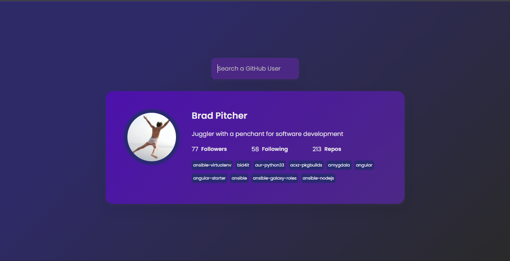

GitHub Profiles App


Project Purpose and Goal
A social platform designed for users to search for other users on GitHub. It displays the user's followers, people he's following, his repositories and bio.
Web Stack and Explanation
Built using HTML and CSS. Used an API that retrieves data from the GitHub server. The repositories are sorted by the 'stargazers_count' in descending order using JavaScript.